Blyx manual
Everything the app can do, with screenshots of the app itself. It runs on a Steam Deck, on a desktop and on an Android phone, and it reads Steam, PlayStation, or both at once. The screenshots are from the Deck; Phone and desktop lists what each one can and cannot do.
What Blyx is
Blyx is a second look at the games you already own. Steam and PlayStation show what you bought; Blyx shows what you can do with it: how many hours your backlog holds, what is nearly finished, what has not been touched since you bought it, and what on your wishlist is on sale right now. Both services land in one library, with a small mark on each card saying where a game came from.
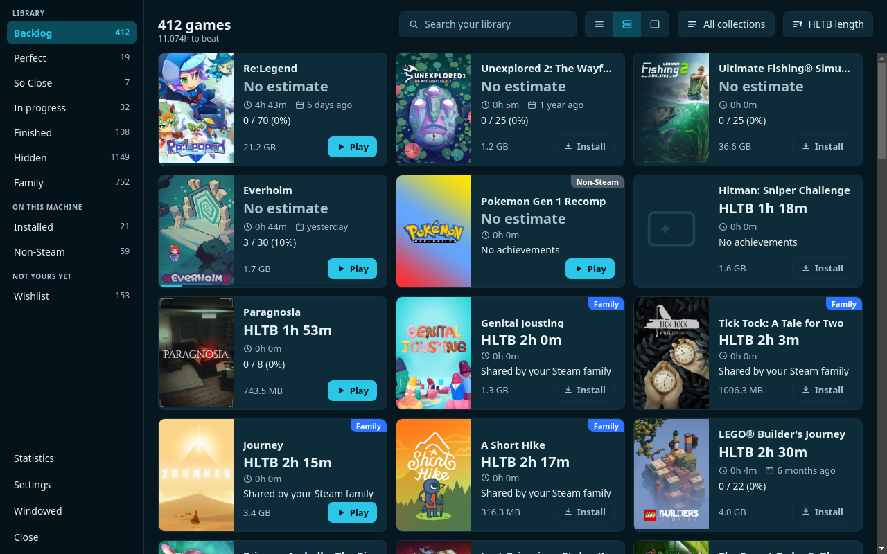
Everything stays local
Your library lives in a database on the device itself. There is no server.
Works offline
Without a connection everything stays visible. Only updating has to wait.
Changes nothing in Steam
Blyx reads. All it asks Steam is: start this game, or install it.
Installing on a Steam Deck
- Switch to desktop mode.
-
Download the latest
Blyx.AppImagefrom the releases page and put it in~/Applications. - Make it executable: right click, Properties, Executable.
- Add it to Steam as a non-Steam game so you can start it in Game Mode as well.
Two settings on the shortcut
Compatibility off. Right click Blyx, Properties, Compatibility, and leave the box unticked. Proton runs Windows programs; this is a Linux one, and forcing a compatibility tool is the most common reason it refuses to start.
Launch options, if Game Mode stays black. Most installs need none, so try it without first. If Blyx opens on the desktop but shows nothing in Game Mode, put this in Properties, Shortcut, Launch options:
LD_PRELOAD= %command% --appimage-extract-and-run
| Part | What it does |
|---|---|
| LD_PRELOAD= | Empties the variable Steam fills with its overlay library. That library is pushed into everything Steam starts and can stop a window from ever appearing under gamescope. You lose the Steam overlay inside Blyx, which has no use for it. |
| %command% | Where Steam puts the program itself. Anything before it is environment, anything after it is an argument. |
| --appimage-extract-and-run | Unpacks the AppImage to a temporary folder instead of mounting it through FUSE. Game Mode's session is a poor place to be mounting things. |
You do not need --no-sandbox. Every build wraps its own
executable so that flag is always passed. Adding it by hand changes nothing.
After that the app keeps itself current. When a new version exists it is fetched in the background and a small block appears in the rail with a button to restart into it. See Updates.
Connecting Steam
On first launch Blyx asks for your Steam account. On a Deck the app already knows
who is signed in, so that is usually one confirmation. What it also needs is a Steam
Web API key: you get one at steamcommunity.com/dev/apikey and paste it
into the setup screen.
Mind your privacy setting. Steam only shares your library when Game details is set to Public. Set to private, an empty list comes back, and the app says so rather than pretending otherwise.
Then the first sync runs. It fetches your library, then achievements, completion times, prices and artwork. The first time takes a few minutes; after that it is keeping up rather than catching up.
Adding PlayStation
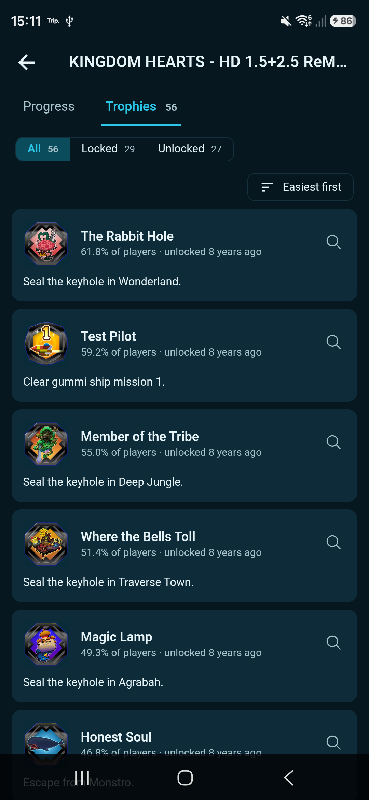
Settings has a tab for every account you have linked, and a + PlayStation beside them. Pressing it opens Sony's own sign-in page in a window of its own. Your password is typed to Sony; Blyx never sees it and keeps only the session Sony hands back afterwards.
After that, the first sync reads what you played and for how long, and your trophies per game. Sony hands over two lists that share no key, so Blyx asks a third question — which trophy set belongs to which game — rather than matching on titles, which used to miss games whose trophy set is filed under a different name.
What you get
Played games with hours, first and last played, trophies with rarity and unlock dates, and your trophy level with every platinum, gold, silver and bronze.
What is missing
No wishlist and no prices: Sony's mobile API refuses both, and no price service tracks consoles the way IsThereAnyDeal tracks PC shops.
Artwork
Sony ships one small icon per game, so covers, banners and logos come from SteamGridDB — and you can pick a different one yourself.
A game with no trophy progress at all has no trophy set on Sony's side, so Blyx shows none. That is Sony reporting on your account, not the game lacking trophies.
Phone and desktop
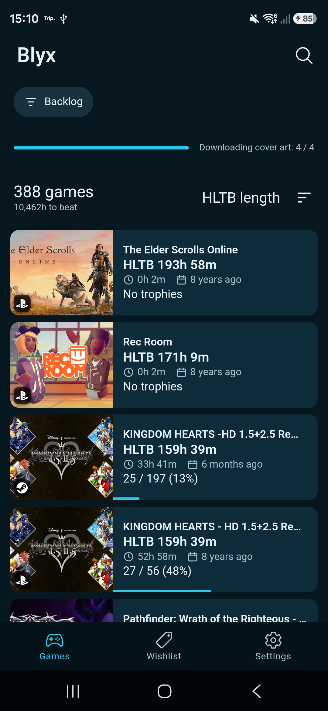
One app, two shapes. The Deck and desktop build reads your local Steam installation and can act on it; the phone cannot, and does not pretend to.
| Feature | Deck & desktop | Phone |
|---|---|---|
| Library, hours, backlog in hours | Yes | Yes |
| Steam and PlayStation together | Yes | Yes |
| Achievements and trophies | Yes | Yes |
| Wishlist, prices, record lows | Yes | Yes |
| Statistics and completion times | Yes | Yes |
| Backup and restore | Yes | Yes |
| Play a game | Yes | No |
| Install, and pick the drive | Yes | No |
| Size on disk, installed state | Yes | Only what a backup carried |
| Steam collections | Yes | Yes, out of a backup |
| Family sharing | Yes | Yes, out of a backup |
| Artwork you replaced yourself | Yes, from Steam itself | Yes, out of a backup |
| Games you add yourself (Switch, 3DS, …) | Yes | Yes |
| Controller navigation | Yes | Touch |
| Filters | A rail, always visible | One Filter button |
Everything in the top half of that table travels in a backup, so a phone restored from a Deck knows what you hid, what you finished and which completion times you corrected — and the other way round.
Adding a game yourself
For what you play somewhere this app cannot reach: a Switch, a 3DS, a console in a cupboard. On a phone + Add a game sits at the foot of the filter panel; on a Deck and a desktop it is in the rail.
- Type the name and press Search — you are searching HowLongToBeat.
- Pick the right entry. It shows the year, the platforms and how long it takes.
- Say where you play it. The buttons come from that entry itself, so a Switch game cannot end up filed under Dreamcast.
The game arrives with its box art and all four HowLongToBeat times, and counts towards your backlog. The corner of the card carries the platform in its maker's own colour — Nintendo red, Xbox green, PlayStation blue.
Its own page has Time played: two boxes, hours and minutes. What you type is saved as you leave the box and counts in your totals — but not in the per-month chart, because 113 hours of Zelda from three years ago did not happen this afternoon. Remove this game takes it out again, and it stays out: your other devices will not hand it back.
No achievements, no price, no installing. None of those exist for a game that came from no shop here, and the screen does not pretend otherwise.
The rail
The rail is the app's steering wheel. Every entry is a question about your library with the answer beside it, so you can see what a filter would give you before you press it.
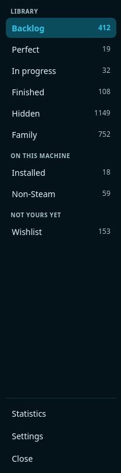
| Entry | What it shows |
|---|---|
| Backlog | Everything unfinished and not hidden. The list you land on. |
| Perfect | Games where you unlocked every achievement, or every trophy. |
| In progress | Started, but not far along. |
| Finished | What you marked as done yourself. Steam has no idea; you do. |
| Hidden | What you put out of sight, plus whatever you hid on Steam itself. |
| Family | Games somebody in your Steam family owns. Not yours, still playable. |
| Installed | What is on this Deck right now. |
| Non-Steam | What you added to Steam by hand: emulators, launchers, loose games. |
| Wishlist | Your Steam wishlist, with prices. See Wishlist. |
Exactly one entry is lit at any moment: the one you are looking at. At the foot of the rail sit Statistics, Settings and, in desktop mode, a button to close the app.
A card, read
Every game is one card, and every card says six things. They are always in the same place, so you can read them without reading.
 1
2
3
4
5
6
7
1
2
3
4
5
6
7
- 1Steam's own tall capsule. Where none exists you get a flat tile with a plus on it.
- 2The name as Steam writes it.
- 3How long the game runs according to HowLongToBeat. "No estimate" means no match was found, and you can make one by hand.
- 4Time played on the left, when you last played on the right.
- 5Achievements: the count and the percentage. "No achievements" means the game has none.
- 6What it takes on disk, or would take if you installed it.
- 7The button: Play when it is here, Install when it is not. While something is downloading this is the percentage instead.
A label can sit in the top right corner: Family for a game from your Steam family, Non-Steam for something you added yourself. A gold badge at the bottom left of the artwork means every achievement is unlocked.
Three densities
Three small buttons sit at the top right. They answer the same question three ways: how much of a game do you want to see at once. Your choice is remembered.
List
The densest of the three, for the thing a card is bad at: finding a title you already have in mind. The figures sit in fixed columns, so you can run your eye down one of them.
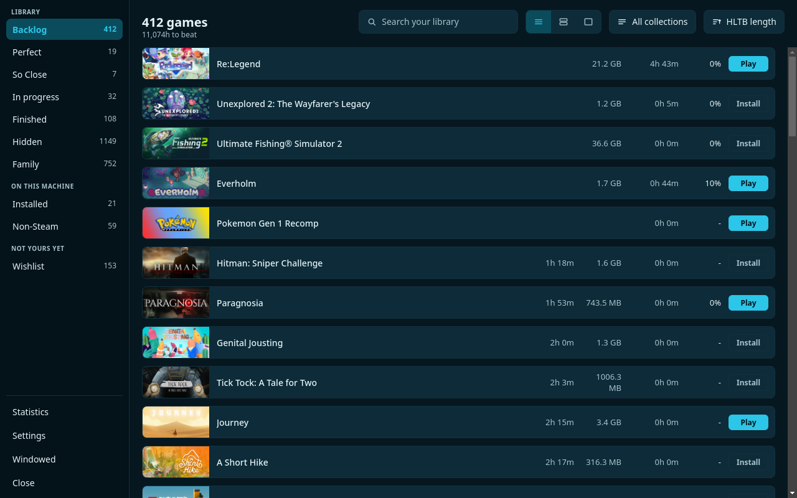
Cards
The default. Enough picture to recognise a game, enough text to choose one.
Large cards
The same card with more room. For when you are browsing rather than searching.
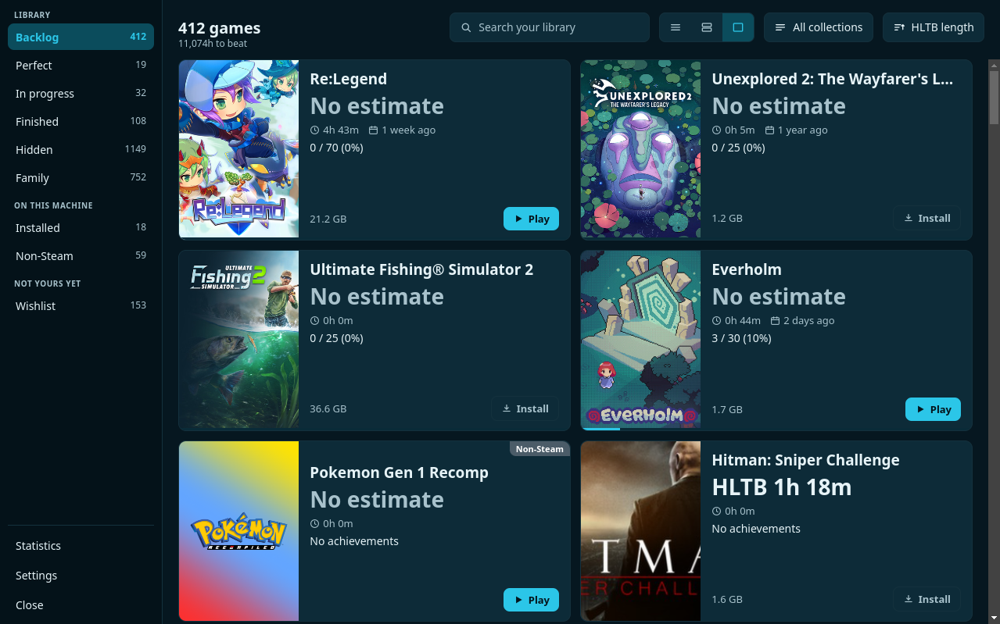
Searching and sorting
Search sits behind the magnifying glass. On a Deck that is deliberately a button rather than a field left open: as long as a text field exists anywhere, Steam keeps offering its keyboard. The field only exists while you are actually searching.
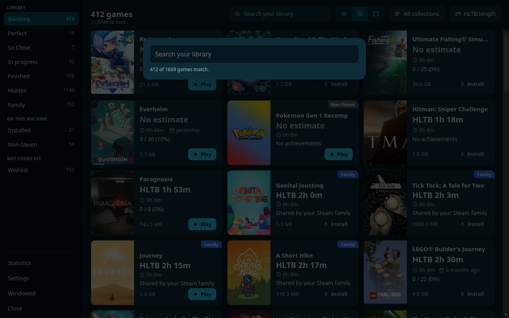
Search ignores your filters: it always looks through the whole library — backlog, finished, hidden and your wishlist — and every result says which list it sits in. A game you hid two years ago is findable rather than invisible.
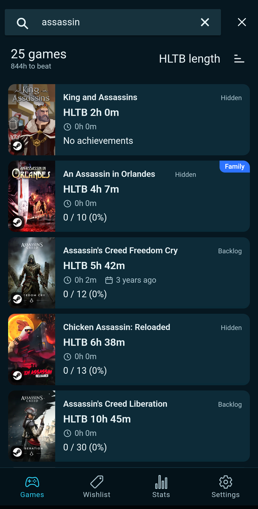
Sorting sits in the menu beside it. What is on offer depends on the list:
| In your library | On the wishlist |
|---|---|
| Last played | Biggest discount |
| Time played | Price |
| Alphabetical | Alphabetical |
| Added to Blyx | Added to wishlist |
| HLTB length | |
| Achievement % | |
| Size or download |
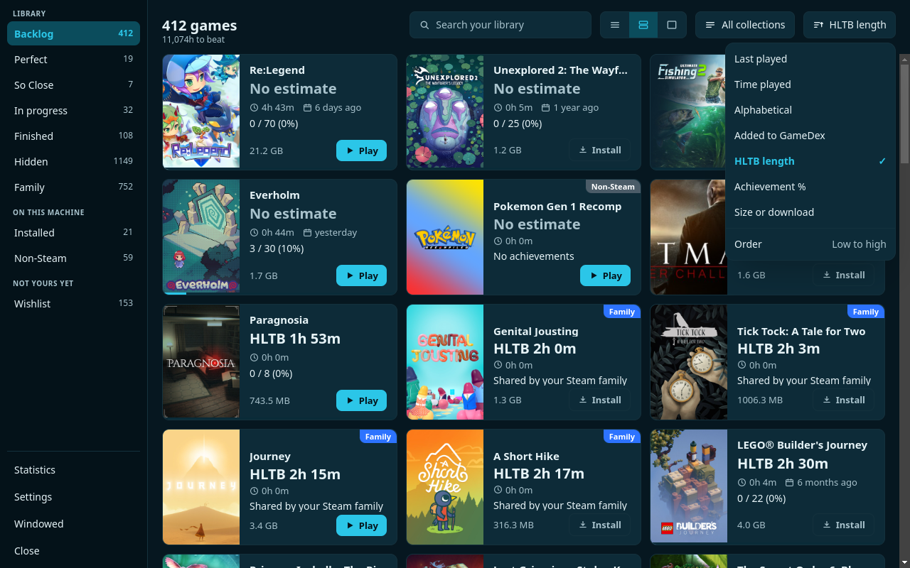
Sorting by Size or download covers the whole library rather than only what is installed: the download size comes out of Steam's own cache and is known for very nearly every game you own.
Collections
The collections you made in Steam itself are here too. You can pick one or several at once, and you can have the list grouped with a heading per collection.
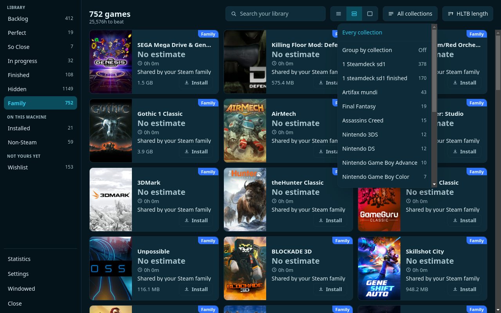
Hiding and marking finished
Two things only you know: whether you are done with a game, and whether you never want to see it again. Both sit in the menu you open with Y on a card, with a right click, or with the ⋯ button that appears in the corner of a card once your mouse is over it. On a phone you swipe the card left.
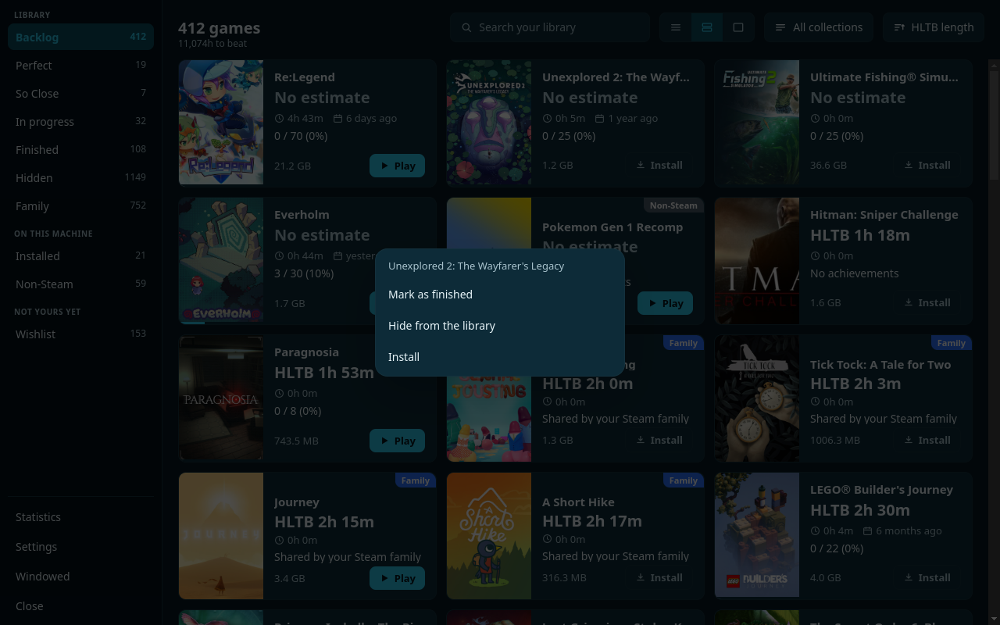
Hidden games drop out of every list and every count except Hidden. They are also left out of the HowLongToBeat lookups, so hiding keeps the app quicker and the traffic smaller.
A game's own page
Open a card and you get the whole game. The wide artwork with its logo at the top, and everything the app knows below it.
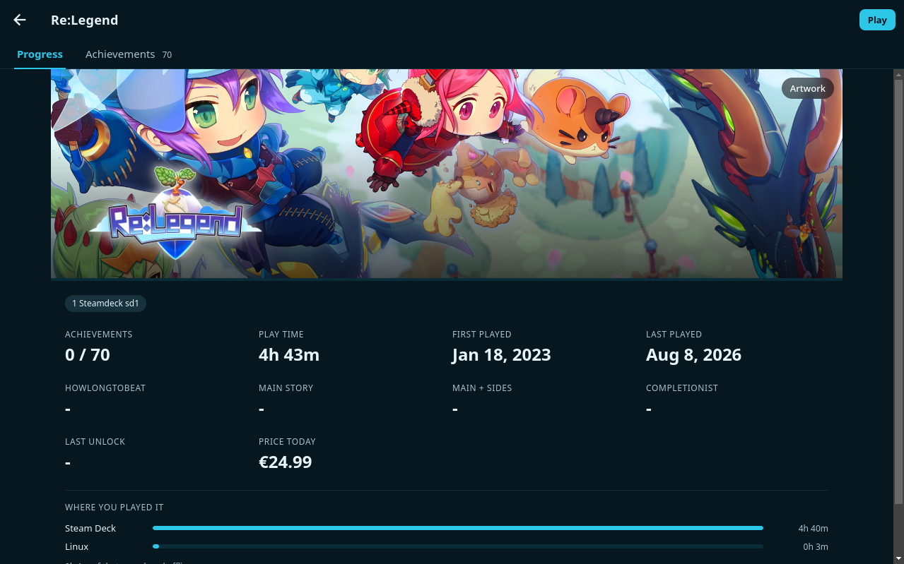
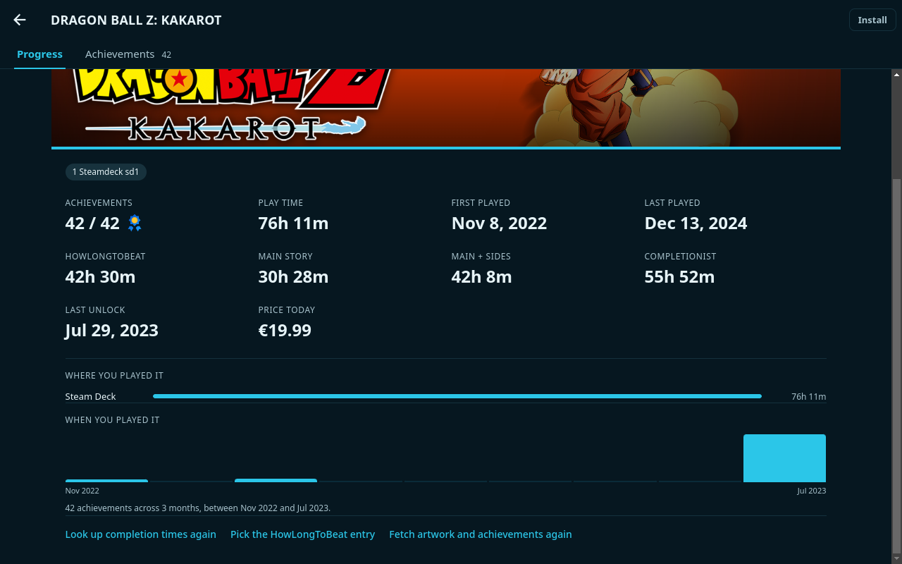
Three actions sit at the bottom:
- Look up completion times again asks HowLongToBeat once more.
- Pick the HowLongToBeat entry lets you choose the right one.
- Fetch artwork and achievements again re-downloads both.
Choosing artwork yourself
Artwork sits in the corner of the wide image. It offers what the SteamGridDB community has made for that game, in the four shapes this app draws:
- Cover — the tall picture on the cards.
- Wide — the landscape one, in the list view.
- Banner — the wide image at the top of this page.
- Logo — the wordmark drawn over it.
If SteamGridDB files the game under another name — an edition, a subtitle, the Japanese title — type it in the field and press Search. What you choose travels to your other devices through your Google Drive folder, straight away rather than at tomorrow's exchange. Use the original puts it back, there too.
Achievements
The second tab on a game's page. Unlocked ones carry their date, the rest carry what percentage of all players has them.
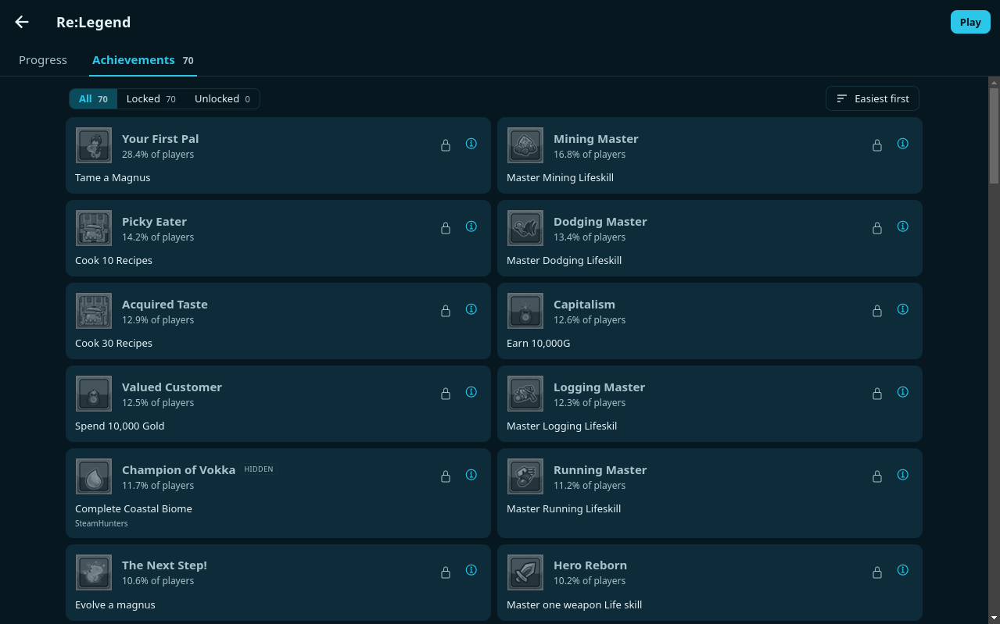
Steam leaves hidden achievements blank. Blyx fills those descriptions in from what SteamHunters knows, so you are not looking at an empty line.
The lists are fetched for your whole library and kept, pictures and all, so they work without a connection. Once you have played, the unlocked state is read again as soon as you open the page; and if the list has grown — which is what a DLC with achievements does — the whole list is fetched again.
Playing
The button on the card starts the game through Steam. On a Deck that works in Game Mode as readily as on the desktop; Blyx asks Steam to start the game and everything after that happens as it always does.
When the game is not here the button says Install. While something is downloading the card counts the percentage and turns into Play the moment it is in.
Installing, and which drive
A Deck has an internal disk and usually an SD card. Which of the two a game lands on is a real decision, and you make it here before the download starts rather than in a window Steam throws up afterwards.
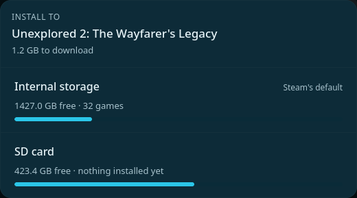
If a game will not fit comfortably that line turns amber with not enough room. Blyx allows two gigabytes of headroom: a drive filled to the last byte is a broken Deck.
No SD card, no question. With only one drive, or when Steam cannot be reached, the panel skips itself and Steam installs the way it always did. You notice nothing.
Wishlist
Your Steam wishlist is a page of its own, with the same cards but different figures: no play time and no achievements, since you do not have those yet, but prices.

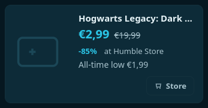
The button here says Store. It opens the shop holding the offer, inside Steam itself, because in Game Mode there is no other browser.
On a phone the rows look like your library — tall artwork, the same spacing — with today's shop underneath and the lowest price ever with the date it was set. Pull the list down to fetch the prices again; that asks for your wishlist and its prices only, not the whole sync.
A nudge when something goes on sale (phone only)
There is a bell at the top of the wishlist. It sets up one notification a day, at a time you choose. It is off until you turn it on.
- It only speaks when something is newly on sale since the day before. The same discount as yesterday says nothing.
- One notification for everything, with the first few names in it.
- The check happens on the phone itself: it asks Steam what your wishlist costs today and nothing else. No server is involved.
- Android decides when a background check really runs. On a phone that has been asleep for a while it may arrive an hour or two after the time you picked.
The bell is not on the desktop or the Deck. An app that is closed cannot check anything, and in Game Mode a notification from a non-Steam app is never drawn.
Prices and record lows
Prices come from IsThereAnyDeal, which keeps a price history across some fifty shops. That history is the point: 75% off means nothing if the game was half that last winter.
| What it says | What it means |
|---|---|
| €12.49 | The least you can pay for it anywhere today. |
| What that same shop normally asks. | |
| -75% | The difference between those two. |
| All-time low €8.43 | The lowest ever recorded, anywhere. |
| Lowest it has ever been | Today's price matches or beats that record. |
Only offers with a Steam key. Shops selling their own copy, such as GOG, Epic, Ubisoft, Microsoft, EA and Blizzard, stay out of view. Their prices are real, but the game would land in a library other than the one this app is about.
The app also remembers the lowest price it has ever seen itself, and records when something falls below it. That is not the same as a discount badge: shops announce a discount at every sale, this only speaks up when it is genuinely cheaper than anything we saw before.
Statistics
At the foot of the rail, or from Settings. Everything, added up.
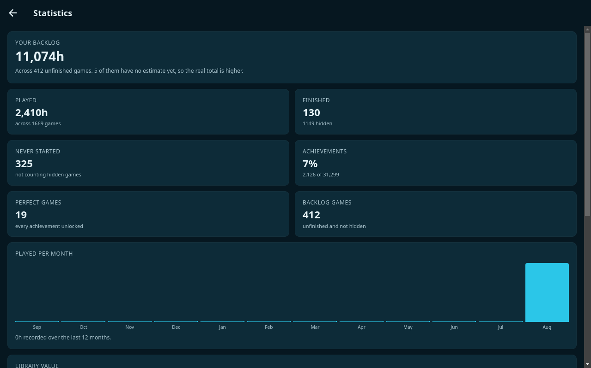
Below that come the charts: played per month, played per hour of the day, and the value of your library at today's shop prices. That last one is emphatically not what you paid; what you handed over at the time lives on your Steam account page and nowhere an app can reach.
At the top are three tabs and a row of years:
- Overview — the figures above. Pick a year and they answer for that year: what you played then, what you finished, and how many achievements you unlocked. The charts follow along.
- Per game — how long you played each game and when you last touched it, with its sessions underneath. Sorted by what you touched last.
- Per year — a year as the months it consisted of, with the games and their hours per month.
A year in which you did play but whose hours are not known by the day says Unknown rather than 0h. Steam keeps one total per game and never when it happened; Blyx only starts counting from the first time it saw your hours rise.
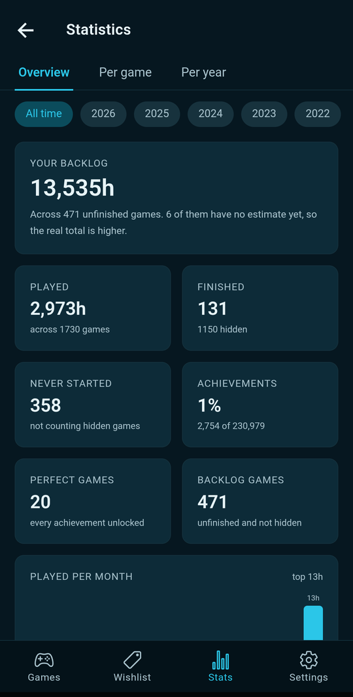
Your year, read as a year
Pick a finished year in Statistics and a card with that year on it appears at the top. Press it.
What you get, in this order:
- How long you played, across how many games, in how many sessions.
- Finished, unlocked, your best month and your longest run of days.
- Where the hours went — a bar in each maker's own colours, so Steam, PlayStation and the Switch on your shelf sit side by side.
- Most played, with the artwork.
- The timeline: January at the top, December at the bottom, each month showing the covers of what you played with the hours on them. Tap one to open the game. Games under an hour are counted below the row rather than drawn.
All of it comes from what Blyx recorded itself, plus whatever you brought in. An empty month stays empty — that is part of a year too.
Bringing in what you kept elsewhere
Blyx builds its history by noticing what changes, so it knows nothing about the years before it was on your devices. These three buttons in Settings fill that in. Each one shows what it found before it writes anything.
A DekuDeals collection
Your notes there are private, so this works from the page itself: in a signed-in browser, open your collection filtered to Completed, save each page with Save as → Page Source, and pick the files. Blyx reads the name, the platform, the hours and the date out of your note and adds them as games of your own.
A HowLongToBeat backup
The CSV it exports knows something no service publishes: the day you finished a game. Games already here are given that date, so they count in their own year; games it has never heard of are added by hand. A Steam game's playtime is left alone — that figure belongs to Steam.
The years Steam keeps
Steam publishes a year in review each December, month by month and game by game, at a public address. One press of Fetch the years Steam knows writes those years into your own history, sessions and all — and sessions are something only Valve counts.
Fixing completion times
Completion times come from HowLongToBeat, matched on title. Usually that works, but not always: emulator entries carry the console's name, Pokémon games are filed without the word "Version", and a sequel is sometimes listed under a name the first game does not share.
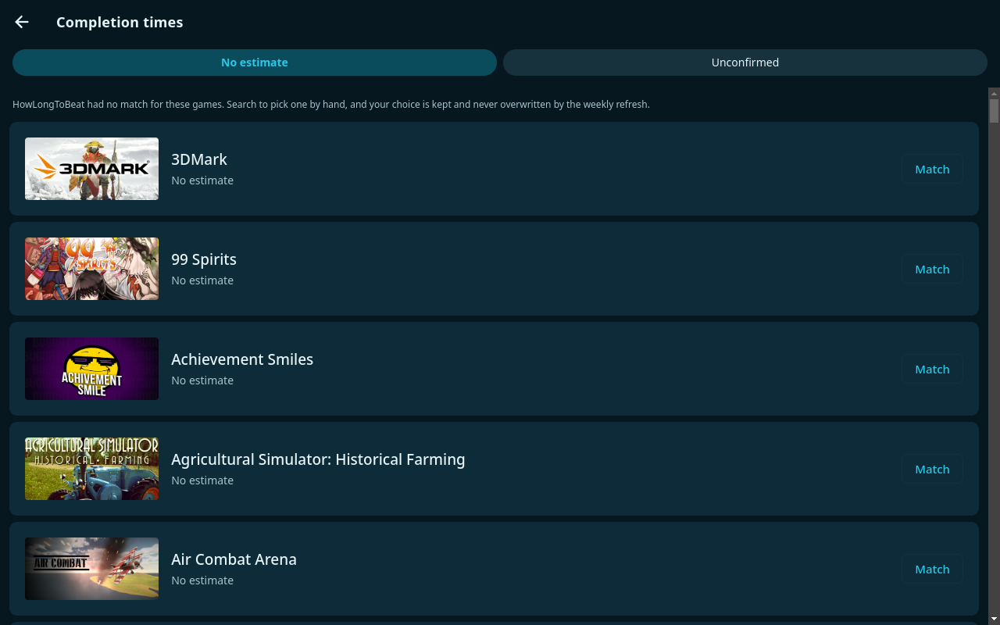
Pick an entry yourself and it is pinned: the weekly refresh leaves it alone. You have given the answer, after all.
Backup to Google Drive
Everything this app knows and Steam does not exists in one place: what you hid, what you finished, your play history, the matches you fixed by hand. A Deck that dies takes it with it. That is what this backup is for.
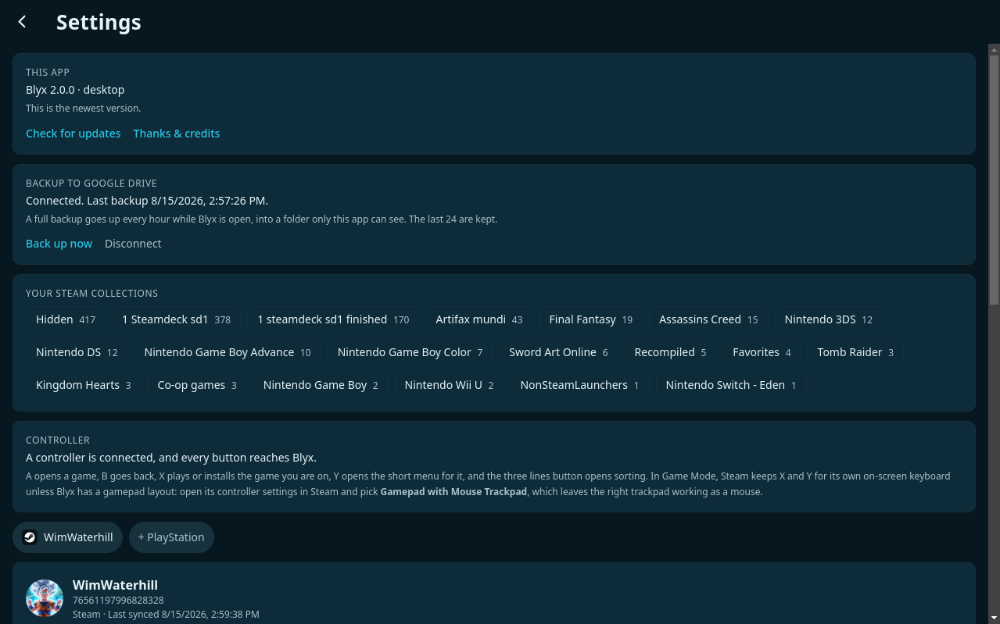
- Press Sign in with Google and sign in.
- The first backup goes up straight away.
- After that, once a day while the app is open. The last 24 are kept.
Every device writes to a file of its own — blyx-phone-a4f2.json,
blyx-mac-7c1d.json — with a short id in the name, so two devices of a
kind cannot overwrite each other. Merging happens per game and per decision: whoever
decided last is right, whether that is hiding, finishing, a pinned completion time or
hours you typed in yourself. Hours Steam keeps only ever go up, because a counter does
not run backwards.
The files land in a Blyx Backups folder in your own Drive, so you can get at them. Blyx asks for the narrowest access Google offers: files the app creates, and nothing else in your Drive.
Every device writes its own file and reads the others. Merging happens per game and by the moment a decision was made: hide a game on your Deck yesterday and unhide it on your phone today, and today wins — whichever device it was.
Artwork you replaced yourself
Steam keeps replaced artwork in a folder only the machine it sits on can read. Blyx puts scaled copies in the same Drive folder — Covers, Capsules, Heroes and Logos — so your phone and your Mac show the same covers as your Deck. That happens once per launch, so a picture you replace today is everywhere tomorrow.
Storage and cache
Artwork and achievement icons are kept on the device, so the app opens quickly and keeps working offline. How much that may cost is up to you.
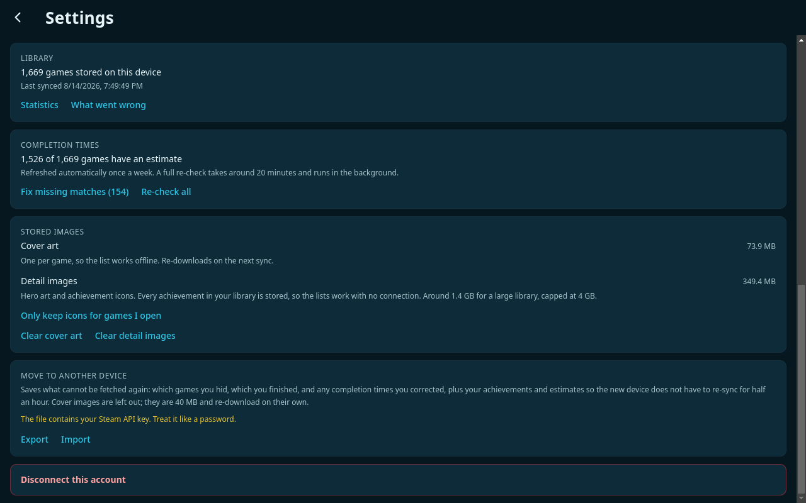
Syncing
Blyx syncs by itself: at launch, and when you come back after a while away. On a Deck and a desktop the foot of the rail says what it is doing and how far it has got — fetching achievement lists for a large library is minutes of work. On a phone the same line sits under the title.
If you would rather not wait, Sync now sits directly above Statistics in the rail. It is also the answer to "has it seen the achievements I just unlocked?" — and on a phone you can pull the achievement list down to ask the same thing, which costs a single request.
While the app is open Blyx checks every five minutes whether your playtime has risen — two requests — and on a Deck or a desktop it reads the Steam client's own files as well, which change the moment a game exits. Every rise it sees is a session. Looking more often makes the history sharper: two evenings between two glances would otherwise look like one.
Updates
The app checks for a new version itself and fetches it in the background. Once it is in, a small block appears at the foot of the rail with a button to restart. Nothing appears while there is nothing to report.
By hand works too: Settings, then Check for updates. The version you are running is written there as well.
Controls
The app is built for a Deck in your hands. A bar along the bottom always says what the buttons do at that moment, and it only names buttons Steam actually passes through.
| Button | Does |
|---|---|
| Stick or D-pad | Moves the selection to whatever lies that way. |
| A | Chooses what is selected. |
| B | Closes a panel, or goes back. |
| X | The shortcut on a game: Play, Install or Store. |
| Y | The menu with hiding and marking finished. |
| Menu | Opens the sort menu. |
| Two squares | Opens search. |
A keyboard does the same: the arrows move, Enter chooses, Esc goes back, and X, Y, M and F do what the table says. The mouse keeps working and the two never fight.
Steam's keyboard. To type in Game Mode, open it with Steam + X. Blyx never asks for it, because a window that summons a keyboard uninvited keeps doing so.
Offline
Without a connection the whole app stays usable: your library, your figures, the artwork, the achievement lists and the sizes are all on the device. What cannot happen is updating, and the app says so rather than pretending.
Playing and installing keep working as long as Steam itself is running; those two go straight to Steam rather than through Blyx.
Where the data comes from
Almost nothing on these screens was collected here. Your library is Valve's, the completion times were submitted by players, the price history has been kept by others for years.
The full list is in the app under Settings, at Thanks & credits: who provides what, whose trademarks are whose, and which open-source packages this is built from.
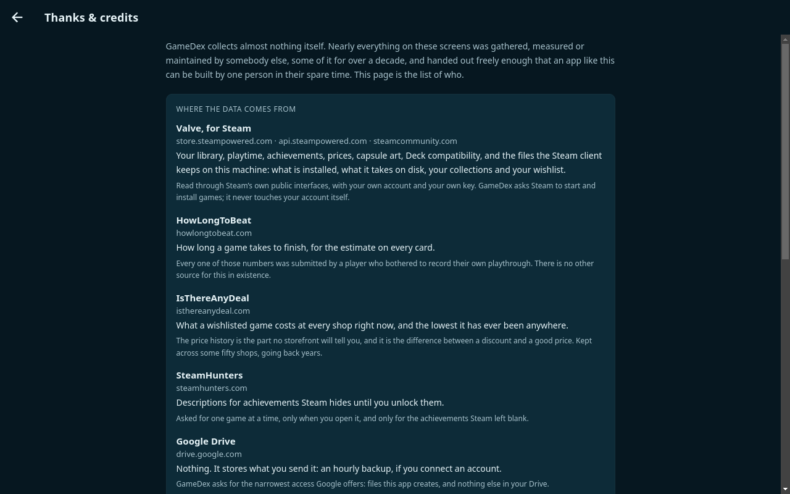
When something goes wrong
The library is empty after connecting
Almost always the privacy setting: Game details has to be Public in your Steam profile. Change it and run the sync again.
A game has no artwork
Not every game has every size on Steam. Open the game and press Fetch artwork and achievements again. If it stays empty the image does not exist, and the app shows a flat tile rather than a broken picture.
The completion time is wrong
Matching happens on title. Pick the right entry through Fixing completion times; your choice is never overwritten afterwards.
The keyboard keeps coming back
Close it with B and leave the search field. If it still returns, something has changed in Steam itself; write down what you did, because that is exactly the kind of thing that got solved before by measuring it.
Something went wrong during a sync
Settings, then What went wrong. It lists what failed, with the time beside it.